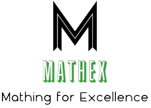

Click a title to expand details. Peer-reviewed papers and preprints are on the Publications page.
We address the challenge of solving the Low Autocorrelation Binary Sequence (LABS) problem using a quantum-enhanced hybrid optimization framework. First, we implemented Pauli Correlation Encoding (PCE), a NISQ-friendly scheme that maps binary variables to quantum observable expectations, reducing qubit requirements from O(n) to O(√n) while mitigating barren plateaus. We integrated this encoding with a classical Memetic Tabu Search (MTS) algorithm to form a hybrid PCE–MTS pipeline. Benchmarking against standalone MTS under equal computational budgets, we observed a 16.72% improvement in merit factor, and a 5.86% improvement even when the classical method was allocated ten times more function evaluations. To maximize performance, we implemented end-to-end GPU residency, combining CUDA-Q–based quantum state-vector simulation with CuPy-accelerated classical optimization, and parallelized parameter-shift gradients and energy evaluations via vectorized GPU kernels. Our results demonstrate a practical quantum advantage for combinatorial optimization in the NISQ regime, with runtime scaling of O(1.31n), competitive with and in some cases outperforming state-of-the-art classical heuristics.
Done in collaboration with Haadi Khan, Steve Cao and Alice Wang.
Award: 2nd place, NVIDIA track at MIT IQuHacks 2026.
We present a GPU-accelerated implementation of the Pauli path propagation algorithm for quantum circuit simulation. Our CUDA implementation achieves speedups of up to 626× over a single-threaded CPU baseline on circuits with 1000+ initial Pauli words, with an average speedup of 213× across our stress test suite. Key contributions include a multi-block dynamic work distribution algorithm, efficient inter-block coordination through word-count-only transfers, and parallel truncation using prefix sums.
Done in collaboration with Daniel Ragazzo.
We introduce a dual-mode quantum sampling framework for Markov random fields: amplitude encoding for small models (n ≤ 10) and variational circuit compression for larger ones (n > 10), achieving 17× to 8,738× parameter reduction with fidelities of 0.65–0.99. Honest benchmarking shows computational costs match classical methods when both access the full distribution, but quantum sampling provides superior statistical properties: genuine independence (ESS 98% vs. 10–15% for MCMC), zero burn-in, and 6.5× Monte Carlo variance reduction.
Done in collaboration with Bryan Zhang.
We present a modular quantum–classical learning architecture built directly into the 10-414 Needle deep-learning framework: quantum logic layers (Hadamard, CNOT, and Pauli-rotation gates) integrated with automatic differentiation, a simulation layer supporting full-state evolution, and classical processing layers for hybrid training. This design enables “True QNNs” whose parameters act on quantum amplitudes rather than classical surrogates, yielding strong empirical advantages: on entanglement-detection tasks, QNNs reliably separate entangled from separable states by exploiting phase information inaccessible to classical networks. Honest benchmarking reveals the tradeoff: while the quantum-native models validate theoretical benefits for amplitude-level tasks, full quantum-state simulation incurs substantial computational overhead—even with GPU acceleration—mirroring classical-quantum cost gaps seen in other high-fidelity simulators.
Done in collaboration with Aryan Jain.
We address the challenge of reconstructing and denoising quantum states from Wigner functions using both optimization techniques and machine learning. First, we implemented a contour-based sampling algorithm to enhance density matrix reconstruction via least squares fitting, solving the resulting convex problem with SCS and CBC solvers. We demonstrated strong performance on simulated and real quantum states, including Fock, coherent, and cat states. Next, we analyzed superconducting noise models, constructing a large dataset of noisy Wigner functions with five distinct noise types. To denoise these, we employed a U-Net convolutional neural network, achieving high-fidelity reconstructions of heavily corrupted states. Our results highlight the effectiveness of combining physically informed sampling with deep learning for quantum state reconstruction.
Done in collaboration with Haadi Khan, Tanmay Neema, Ryan O'Farrell and Alice Wang.
Awards: 1st place, Alice & Bob track at YQuantum 2025; 2nd place overall, Yale Quantum Institute Grand Prize; invited to present at the QuantumCT Industry Collaboration Forum.
Our project investigates the links between diet, health, and economics, focusing on the obesity epidemic in the US. With over 40% of adults affected by obesity, largely due to high consumption of processed foods, this issue not only impacts individual health but also imposes a significant financial burden on the healthcare system. We analyze how processed food consumption relates to obesity and financial markets using statistical tests and quantitative models.
A key feature of our study is an innovative pairs selection and trading algorithm, which reveals that stocks of companies producing or using processed foods show strong correlations with healthcare sector stocks. This pattern provides opportunities for financial gains, with our strategy yielding 7 profitable pairs and a Sharpe ratio of 1.58.
We propose further refining our approach with SARIMA forecasting models to enhance predictive accuracy and offer actionable insights for stakeholders in the food and healthcare sectors.
Done in collaboration with Pi Rey Low, Julia Huang, and Peter Zheng.
Award: 2nd place overall (Sharpe ratio 1.58).
2Y2B simplifies the way users receive their news. Users enter their keywords of interest, and several news APIs fetch recent peer-reviewed articles related to those topics. OpenAI's GPT-3.5 Turbo-16 LLM then summarizes the news articles into concise 3-5 minute texts, which Google Text-To-Speech converts into MP3 audio files for easy listening. Our product is also integrated into an app/website that remembers user preferences for a personalized experience.
Done in collaboration with Michael Chen, Maximillian Chuang, and Praneel Varshney.
Award: Top 15 at TartanHacks.
Eco Bin aimed at enhancing environmental sustainability by automatically sorting waste into recycling, compost, and trash. It utilized two types of sensors: a camera for computer vision and a depth camera to detect the shape of objects. Leveraging this data along with a custom-built deep learning model, the robotic trash can accurately classified 80% of tested objects, achieving a 95% accuracy on the training dataset. This software was integrated with a hardware solution that would automatically process and sort the respective waste.
Done in collaboration with Mehul Goel, Anirudh Mani, and Steven Yang.
Award: Graduate Student Association cash prize at HackCMU 2023.
This project addresses the optimization of airline boarding and disembarking procedures. Our team has developed a series of robust models to simulate and analyze these processes from a comprehensive perspective. By identifying key factors such as passenger walking speed, sitting and standing speed, luggage amount, and customer satisfaction, we created a model that predicts individual passenger behavior during boarding and disembarking. We evaluated common boarding methods, including Random, By Seat, and By Section, to determine the most time-efficient and feasible procedures. Our simulations incorporated various passenger demographics and aircraft models, including Narrow Body, Flying Wing, and Two-Entrance, Two-Aisle configurations. The results indicate that the By Seat method was the fastest for the Narrow Body aircraft, with an average boarding time of 32.6 minutes. The enclosed paper provides a detailed analysis of the performance of other boarding methods.
Done in collaboration with Simon Beyzerov, Aaron Tian, and Gracie Sheng.
Award: Finalist at IMMC 2023.
Climate change and increased water demand have caused severe drought in Lake Mead, the largest U.S. reservoir, affecting 25 million people. This paper presents multiple predictive models for Lake Mead's water elevation, proposing a comprehensive model that accommodates complex volumetric relationships for advanced analyses. We analyze volumetric factors like inflow, outflow, and loss, guiding the creation of an adaptable model. Using a Seasonal Auto Regressive Integrated Moving Average (SARIMA) model on data from 2005-2020, we project future elevations and compare results to a linear regression model. Our enhanced approach integrates climate change impacts for more accurate predictions. We also propose a two-phase water reuse plan and recommend conservation practices, demonstrated through a case study highlighting effectiveness and metrics.
Done in collaboration with Simon Beyzerov, Aaron Tian, and Gracie Sheng.
Award: Honorable mention at HiMCM 2022.
Quantum Computing and Information Technologies (QCiT) Center, is the university's first and only student-led organization dedicated to building a vibrant and inclusive quantum community. We bring together students from diverse backgrounds—physics, computer science, engineering, and beyond—united by a shared passion for quantum technologies. Our mission is to advance quantum literacy, foster interdisciplinary collaboration, and promote hands-on engagement with research and industry. We've hosted guest speakers from leading quantum companies including BlueQubit, Alice & Bob, Xanadu, QuEra, IonQ, Quantinuum, HPE, IBM, and NVIDIA. As an active member of the Quantum Coalition, we co-designed and led a track at the UN-sponsored Future Leaders in Quantum (FLIQ) Hackathon, and our efforts are currently supported by sponsors such as General Motors and Boeing.
Mathematics is often seen by students as unintuitive and tedious, which can hinder their academic and career prospects. NousQuest was created to address this issue by leveraging a unique problem bank architecture and machine learning to offer interactive and personalized gamification features, making math learning engaging and enjoyable for students.
MathEx is a 501(c)(3) non-profit organization dedicated to fostering interest in competitive mathematics and related fields. Our YouTube channel features over 160 videos, with more than 75,000 views and 1,200 subscribers. Additionally, we conduct in-person courses and training camps throughout the eastern Massachusetts region.
